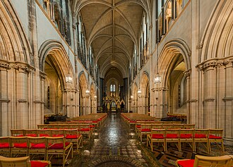
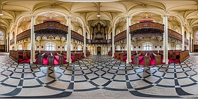
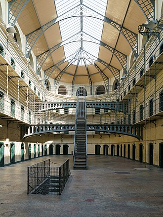
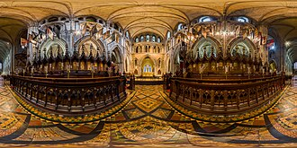
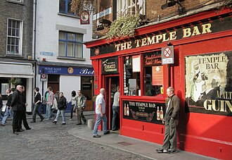
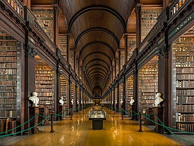

Исторические и справочные гербы


Dublin
Путеводитель. Объектов в этом выпуске: 30.
OTIUM — практика нарочитого досуга. В античном смысле otium — не побег от работы, а время, когда внимание возвращается к памяти, пейзажу и мысли — без прикладного дедлайна.
Мы выстраиваем маршруты для неспешного присутствия, а не для чек-листа достопримечательностей: важно быть в месте, а не «потреблять» виды.
OTIUM — не туроператор. Это приглашение пройтись, остановиться и оставить маршрут незавершённым, если свет на фасаде заслуживает ещё минуты.
Исторические и справочные гербы
Путеводитель. Объектов в этом выпуске: 30.
Дублин — столица Ирландии и главный город острова, порт у устья Лиффи.
Викингское поселение, средневековый The Pale, британский период и независимое государство сформировали литературную и музыкальную традицию. Тринити-колледж, Гиннесс и георгианская застройка — часть узнаваемого облика города.
Независимость и гражданская война сформировали ирландскую столицу; вступление в ЕС и технологический бум сделали Дублин центром IT-компаний. Сохраняются литературные музеи, традиции пабов и роль порта в связи острова с Европой.

Библиотека Честера Битти — библиотека и музей в Дублине, Ирландия.


Дублинский старинный собор с крипт-кафе, традициями гробницы Струнгбоу и колоколами, возвышающимися над основаниями времен викингов. Соединительный проход ранее физически связывал собор с Синодальным залом. Крипто-туры объясняют слои захоронений и гражданских хартий Дублина.
Нордическое Дублин Ситрика Сильбирда столкнулся с расширением средневековых епархий; викторианский архитектор Стрит переосмыслил интерьеры. Археология викингов в Дублине сочетается с работой англиканской литургии.

Бывшее вице-королевское местоположение с крылом библиотеки Честера Битти, садами Дублинн и экскурсиями по государственным квартирам. Конференц-центр в нижнем дворе периодически принимает саммиты ЕС. В башне Бедфорда демонстрируются президентские инаугурации на больших экранах.
Крепость Черного пруда (Дуб лин) развивалась в центр британской администрации до церемоний передачи власти в 1922 году. Государственное церемониальное сердце независимой Ирландии.


Интерактивные галереи в хранилищах доклендс, посвященные историям ирландской диаспоры по тематическим направлениям и местам назначения. Отдел генеалогии помогает посетителям начать поиски своей семьи. Посетите парусник Джинни Джонстон рядом.
В ходе реконструкции доклендс подвалы здания CHQ были адаптированы, а не снесены. Музейный ответ на вопрос «Куда делись ирландцы?».

Портик GPO до сих пор отмечен пулевыми ранами со времени Восстания 1916 года; внутри расположен музей, посвященный неделе восстания. Luas Red Line останавливается на Абби-стрит, возле лестницы. Штаб-квартира повстанцев при Пёрсе; обстрел разрушил внутренности до реконструкции. История происхождения ирландского государства, высеченная в портлендском камне.


Бар "Гравити" (Gravity bar) предлагает панорамный вид на 360° и содержит выставки, посвященные ингредиентам, купелярскому искусству и рекламным архивам. Билеты продаются на ограниченное время в пиковые выходные. Выдержка из договора аренды объясняет мифическую дееспособность на 9 000 лет.
Артур Гиннесс подписал долгосрочную аренду в 1759 году; сейчас туризм является основой экономики Либертис. Самая посещаемая платная достопримечательность Ирландии и место паломничества бренда.

Выбеленный железный пешеходный мостик между ночной жизнью Темпл-Бара и набережными северной стороны — постоянный поток пешеходов днем и ночью. Первоначальная пошлина составляла полпенни; название сохранилось после прекращения сбора пошлин. Любовные замки периодически удалялись для защиты кованых изделий.
Литейный цех Джона ウィндзоров доставлял готовые ребра, собранные на временном деревянном опалубе через Лиффи. Камерный противовес движению по мосту О'Коннелла.


Копия эмиграционного судна эпохи голода с экскурсионными рассказами в нижних отсеках о条件下 пересечения. Туры проводятся почти в любую погоду под крышей. Школьные группы занимают места в середине утра в учебное время.
Ориджинал перевез тысячи человек в Северную Америку, не потеряв ни одной жизни, зарегистрированной в ходе этих плаваний. История о голодной миграции, осязаемая, вдоль Лиффи.

Кильмананский тюремный двор — бывшая тюрьма в Ирландии.

Бывшая тюрьма, изображающая преступления голодного периода и последние дни лидеров 1916 года. Экскурсии продолжительностью в час требуют предварительной записи в летний период. Эхо двора придает экскурсионному повествованию особую живость.
Закрыто в качестве тюрьмы в 1924 году; восстановление позволило начать экскурсии в 1960-х годах. Ключевой эмоциональный стержень нарративов современного ирландского национализма.



Самый большой в Европе городской парк с жилыми оленями, Áras an Uachtaráin и поляной Папской Крест. Арендуйте велосипеды на входе на Паркгейт-стрит. Честер Бити — это короткая поездка на Luas в сторону юга.
Охотничьи угодья Карла II стали общедоступной зоной с ростом города вокруг них. Зеленые легкие между центром города и деревнями Шаплезидо.


Национальный собор со склепом Свифта, памятником Бойля и просторными церковными лужайками для тихих чтений. Вечерний гимн хора бесплатен во многие будние дни, когда хор проживает в здании. Библиотека Адъджент Маршс идеально подойдет для литературного полдня.
Основан рядом с святым источником; основные викторианские реставрации, финансируемые семьёй Гиннесс, видны в циклах витражей. Самый большой неф катедрального собора в Ирландии и популярное паломническое место.

Собор Святого Патрика — Разграничительная страница Викимедиа.



Густые ночные улицы с уличными музыкантами, галереями и фасадом паба Temple Bar, послужившего образцом для фотосъемки. Пивные кружки здесь стоят дороже, чем в загородных заведениях. Пик толп в выходные наступает после матчей GAA и концертов.
Планирование культурный квартал спас склады от сноса; туризм вытеснил местных художников. Прогулка в первую ночь при коротком городском отдыхе.



Зал с книжными шкафами этажерным стилем, в котором выставлены бюсты писателей; выставка «Книга Келлса» ведет в этот неф. Комплексный пакет билетов с ограниченным по времени доступом, включающий просмотр иллюминированных манускриптов и доступ в Лонг-рум. Пешие экскурсии по кампусу, проводимые студентами, отправляются от арки Главных ворот.
Палата Томаса Берга хранила растущие коллекции колледжа; консервация крыши в 2003 году стабилизировала цилиндрический свод. Самое популярное для посещения в помещении историческое место в Ирландии.